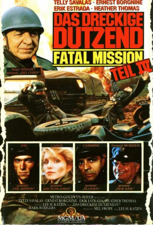

#6604 Das Dreckige Dutzend 4 - The Fatal Mission
Alternativ: The Dirty Dozen: The Fatal Mission
 
 IMDB-Wertung: 5.2 / 10
IMDB-Wertung: 5.2 / 10  Metascore: 0
Metascore: 0 
Hochrangige Nazis wollen in Istanbul eine geheime Regierung aufbauen, die die Grundlage des 4. Reichs bilden soll. Die Alliierten senden Major Wright, um dies zu verhindern. Der Auftrag des dreckigen Dutzend lautet: in Bulgarien den Zug mit Hitlers Nachfolger abfangen.
Jahr: 1988
Dauer: 94 Minuten
FSK: 16
Land: USA Studio: NBCTonspuren:
Untertitel: Deutsch,
Auflösung: 1080p (1440x1080) Größe: 8140 MB
Genre: Action, Abenteuer, Krieg
Regisseur: Lee H. Katzin
Drehbuch: Nunnally Johnson
Soundtrack:
Darsteller:
 Telly Savalas als Maj. Wright
Telly Savalas als Maj. Wright Ernest Borgnine als Gen. Sam Worden
Ernest Borgnine als Gen. Sam Worden- Hunt Block als Joe Stern
- Jeff Conaway als Sgt. Holt
- Alex Cord als Dravko Demchuk
- Erik Estrada als Carmine D'Agostino
 Ernie Hudson als Joe Hamilton
Ernie Hudson als Joe Hamilton- Ray 'Boom Boom' Mancini als Tom Ricketts
- John Matuszak als Fred Collins
 Natalija Nogulich als Yelena Petrovic
Natalija Nogulich als Yelena Petrovic- Heather Thomas als Lt. Carol Campbell
- Anthony Valentine als British Colonel
- Richard Yniguez als Roberto Echevarria
- Scott Hoxby als Hoffman
- Slavko Juraga als Partisan Fighter
- Matthew Burton als Gen. Kurt Richter
- James Carroll Jordan als Lonnie Wilson
- Branko Blace als Munoz
- Robert Bobinac als Porter
- Budimar Sobat als Mitchell
- Matko Raguz als Peter
- Ranko Zidaric als Vasco Petrovic
- Ray Armstrong als Kranz
- Greg Charles als Lieutenant
- Drew Lucas als Captain Craig
- Peter Arp als SS Captain
- Gus Savalas als U.S. Captain
- Clare Grant als British Whore
- Kazia Pelka als British Hooker
- Richard Garnett als British Pilot
- Slavica Knezevic als Lady of the House
- Tibor Belitza als New Butler
- Sreten Mokrovic als Richter's Aide
- Slobodan Milovanovic als SS Major
- Kresimir Dolencic als Private
- Damir Saban als SS Sergeant
- Ivo Kristof als Capt. Carl Ludwig
- Milan Plecas als Bulgarian Fascist
- Sinisa Cmrk als (uncredited
- Danilo Poprzen als Old Man , uncredited
Datei: X:\4-Tetralogie(A-K)\Dreckige Dutzend\Dreckige Dutzend 4 - The Fatal Mission, Das (1988, FSK16, 1440x1080).mkv seit 25.07.2017
Festplatte: HD Collection-3(N-Z)-6(A-Z)
 Es gibt insgesamt 7 Filme in der Gruppe '4-Tetralogie(A-K)\Dreckige Dutzend'
Es gibt insgesamt 7 Filme in der Gruppe '4-Tetralogie(A-K)\Dreckige Dutzend'